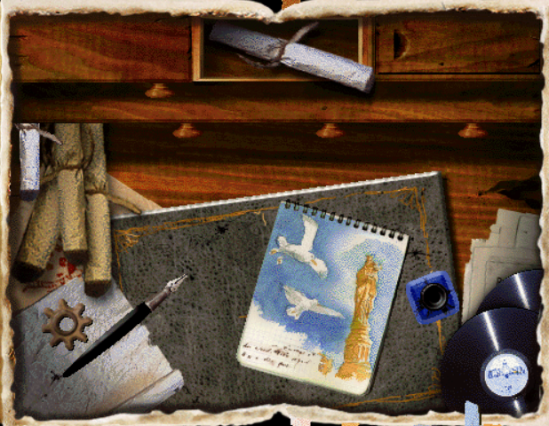

ARCHIVES
Bande-annonce de l'Album secret de l'Oncle Ernest
Bande-annonce du Trésor de l'oncle Ernest
Anciens sites archivés
Ces sites ont été supprimés mais restent accessible indirectement via Wayback Machine :- Le site officiel des jeux Oncle Ernest oncle-ernest.com
- Le site de l'auteur Eric Viennot ericviennot.net
Mises à jour
- 02/09/2026 : remplacement des captures d'écran dans la rubrique solutions détaillées par des images de meilleure qualité pour les jeux de la trilogie originale, corrections mineures d'affichage - 01/09/2026 : refonte du menu de la version mobile, ajout de la série des aventures bidules dans la rubrique Jeux- 30/08/2026 : nombreuses corrections et compléments dans les solutions détaillées, ajout de la rubrique sur les comédiens ayant interpétré l'oncle Ernest dans les anecdotes, ajouts visuels divers (icônes originales des jeux dans les solutions, icône site, animation cloporte, soulignage des menus sélectionnés).
- 11/07/2026 : création et mise en ligne du site
